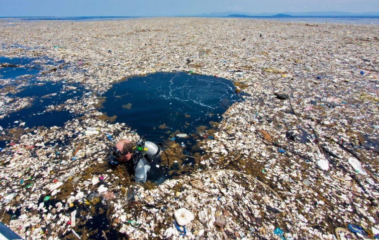
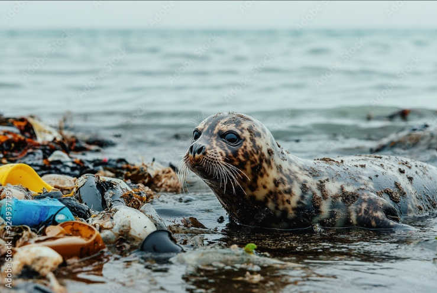
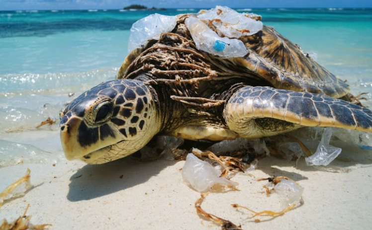

Ocean pollutions is one of the most urgent crisisis our planet is facing today. More than 2 billion metric tons of solid waste is thrown into the oceans per year, averaging about 1.6 pounds per person per day, threatening marine ecosystems and human livelihoods. Plastic bags, bottles, fishing nets, and microplastics are among the most common pollutants. These materials do not biodegrade easily; instead, they break down into smaller fragments that persist for centuries. Marine animals often mistake plastic for food, leading to injury, starvation, or death. The consequences of ocean littering extend beyond wildlife. Polluted waters disrupt coral reefs, reduce fish populations, and damage coastal economies dependent on tourism and fishing. Microplastics have even entered the human food chain through seafood consumption, raising concerns about long-term health effects. Addressing ocean pollution requires global cooperation. Governments must enforce stricter waste management policies, industries should reduce single-use plastics, and individuals can help by recycling, avoiding littering, and participating in beach clean-ups. Raising awareness about the dangers of ocean pollution is essential to inspire collective action. As students and responsible citizens, we all have a role to play in protecting our oceans. By making small changes, such as reducing plastic use, recycling, and keeping our beaches clean, we can make a big difference.Protecting our oceans is not just about preserving beauty,it is about safeguarding biodiversity, food security, and the health of future generations. A cleaner ocean ensures a sustainable planet for all.

Penang – A tragic member of the community has passed away just today. A shark had eaten a big plastic bag causing him to choke and die. Locals call him Sharky the shark and are extremely depressed due to the lost of such a valued member. He was friendly and even often allow surfers to ride on his back. The trash he choked on was found to be thrown just a few minutes prior by a tourist. The tourist was then arrested and has been charged with littering and illegally poaching. The judge who is reviewing his case is allegedly a huge fan of Sharky, so his sentence will not be taken lightly.

